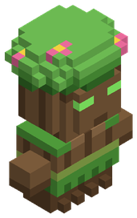

Bestiario › Aldeano

Aldeana sylva
Pacífico Bípedo Aldeano Aldeanos Aldeano
Vive en las aldeas: pasea de día, se mete en casa de noche y huye a ella si hay peligro.
1Nivel
40Vida
2Daño
0Armadura
1Regeneración
2,4Velocidad
Archivo de datos: mods/villagers/villager_sylva.json · tamaño del vóxel 0,1 m · cuerpo de 0,8 × 1,9 bloques